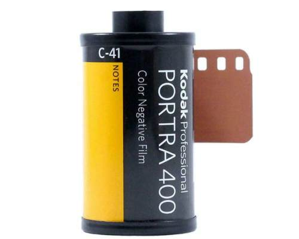

Kodak first entroduced 35mm film for still images in 1934 and it was called 135 film. 135 is
not an important number, its just the number that was assigned to the film type. The film is located
inside a type of cartridge that is loaded into the camera.
This is how film is loaded into most 35mm cameras. Once the film is loaded into the camera like this
you are ready to take pictures (just make sure you close the camera so the film is not exposed to light).
For more information on how to load 35mm film click here.
Popular Film for 35mm cameras

Some of the most well-known films include Portra 400, Ilford HP5 400, Fuji Superia 400, and Cine Still 800.
All of these (except for the Fuji 400) are also available in 120 format. Speaking of which, to learn about 120 film, click here.